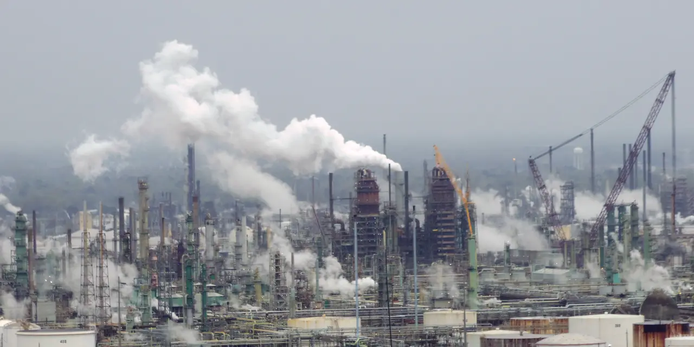

엑슨 모빌을 볼 때 가장 쉬운 질문은 유가입니다. 그러나 XOM 주주가 정말 궁금해해야 할 질문은 “유가가 오릅니까”보다 “유가가 보통이어도 주당 현금흐름을 키울 수 있습니까”입니다. 통합 에너지 메이저의 힘은 원유 가격 한 줄이 아니라 저비용 생산, 정제·화학, 자본 배분이 함께 움직일 때 나옵니다.
엑슨은 가이아나와 퍼미안에서 생산 성장의 축을 갖고 있습니다. 이 두 지역은 회사가 장기적으로 비용 구조를 낮추고 주주환원을 유지하는 데 중요합니다. 단기 유가가 흔들려도 저비용 배럴이 늘어나면 현금흐름 방어력은 좋아집니다.
엑슨 모빌의 최근 실적 발표를 읽을 때는 생산량, 자본 지출, 잉여현금흐름, 배당과 자사주 매입을 함께 봐야 합니다. 에너지 주식은 매출보다 현금 배분의 질이 더 오래 남습니다.
유가는 설명의 시작이지 결론이 아닙니다

통합 메이저는 유가가 높을 때 모두 좋아 보입니다. 차이는 유가가 평범할 때 드러납니다. 비용이 낮은 자산을 갖고 있고, 다운스트림이 버티며, 자본 지출을 통제할 수 있는 회사가 주주환원을 지속합니다. 엑슨의 투자 논리는 이 방어력에서 출발합니다.
가이아나는 고성장 저비용 프로젝트로 자주 언급됩니다. 퍼미안은 미국 내 생산과 인프라 효율의 중심입니다. 두 지역이 계획대로 생산을 늘리면 회사는 유가 상승 없이도 주당 생산과 현금흐름을 개선할 수 있습니다.
다만 대형 에너지 프로젝트는 항상 일정과 비용 리스크가 있습니다. 생산 목표가 늦어지거나 비용이 올라가면 자사주 매입 여력은 줄어듭니다. 유가가 좋을 때는 이 문제가 가려지지만 유가가 약할 때는 바로 드러납니다.
셰브론·코노코·다이아몬드백은 다른 방식의 비교표입니다
관련 영상
ExxonMobil (XOM): Molecule Management Pivot vs. The $20B Annual Buyback
셰브론은 엑슨과 같은 통합 메이저 비교 대상입니다. 자본 배분, 배당 안정성, 대형 프로젝트 실행력을 나란히 봐야 합니다. 코노코필립스는 더 순수한 상류 생산 노출을 보여줍니다. 다이아몬드백 에너지는 퍼미안 셰일의 단위비용과 자본 효율을 비교하는 데 유용합니다.
엑슨의 장점은 통합 구조입니다. 업스트림이 약해도 정제와 화학이 일부 완충할 수 있습니다. 반대로 다운스트림 마진이 약할 때는 생산 성장이 필요합니다. 이 구조는 안정성을 주지만, 모든 부문이 동시에 강해지지 않으면 성장률은 둔해 보일 수 있습니다.
투자자는 에너지 주식을 유가 방향으로만 줄 세우면 안 됩니다. 같은 유가에서도 어떤 회사는 더 많은 잉여현금흐름을 만들고, 어떤 회사는 더 많은 자본 지출을 요구합니다. XOM은 규모가 크기 때문에 작은 효율 개선도 큰 금액으로 나타납니다.
자사주 매입은 유가보다 현금 원천을 물어야 합니다
엑슨의 자사주 매입은 주주에게 중요한 신호입니다. 그러나 매입 규모만 보면 안 됩니다. 그 재원이 반복 가능한 잉여현금흐름인지, 일시적 유가 상승인지 구분해야 합니다. 좋은 자사주 매입은 저비용 생산과 비용 절감에서 나옵니다.
배당도 마찬가지입니다. 에너지 메이저는 배당 신뢰가 중요합니다. 배당을 지키기 위해 과도한 부채를 쓰면 장기 가치는 낮아집니다. 엑슨은 배당과 자사주 매입을 동시에 유지하려면 자본 지출, 프로젝트 수익률, 운전자본을 잘 관리해야 합니다.
정제와 화학은 자주 간과되지만 현금흐름의 변동성을 줄이는 역할을 합니다. 정제 마진이 약하면 업스트림이 더 많은 부담을 져야 하고, 화학 사이클이 회복되면 통합 구조의 장점이 다시 살아납니다.
XOM은 생산 성장과 환원 discipline이 함께 필요합니다
XOM의 좋은 시나리오는 가이아나와 퍼미안 생산이 계획대로 늘고, 단위비용이 낮아지며, 정제·화학 마진이 바닥을 지나고, 잉여현금흐름으로 배당과 자사주 매입을 안정적으로 유지하는 경우입니다. 이때 유가가 크게 오르지 않아도 주당 가치가 올라갈 수 있습니다.
나쁜 시나리오는 유가가 하락하고, 대형 프로젝트가 늦어지며, 정제 마진이 약하고, 자사주 매입이 부채나 일시적 현금에 기대는 경우입니다. 에너지 기업은 현금이 많아 보일 때 오히려 투자 discipline을 잃기 쉽습니다.
따라서 엑슨 모빌을 볼 때는 유가, 생산량, 가이아나·퍼미안 일정, 단위비용, 잉여현금흐름, 배당 커버리지, 자사주 매입 재원, 정제 마진을 함께 봐야 합니다. XOM의 핵심은 원유 가격을 맞히는 게임이 아니라 낮은 비용의 배럴을 주주 현금흐름으로 바꾸는 능력입니다.
가이아나 프로젝트는 엑슨의 성장성을 설명하는 핵심 자산입니다. 하지만 대형 해양 프로젝트는 생산이 시작되기 전까지 자본이 묶이고 일정 리스크가 남습니다. 계획대로 생산량이 늘면 저비용 배럴이 현금흐름을 키우지만, 지연되면 시장의 기대도 늦춰집니다.
퍼미안은 다른 성격의 자산입니다. 짧은 사이클로 생산을 조절할 수 있고, 인프라와 기술 개선을 통해 단위비용을 낮출 수 있습니다. 엑슨이 퍼미안에서 규모와 효율을 동시에 얻으면 유가가 크게 오르지 않아도 주당 생산과 현금흐름을 개선할 수 있습니다.
정제와 화학은 투자자가 종종 낮게 보는 부문입니다. 하지만 통합 에너지 기업에서는 이 부문이 경기 사이클을 완충합니다. 원유 가격, 제품 마진, 원료비 차이가 이익에 영향을 줍니다. 업스트림이 좋을 때 다운스트림이 약할 수 있고, 반대도 가능합니다.
저탄소 사업은 아직 전체 이익의 중심은 아닙니다. 그러나 정책과 고객 계약이 붙으면 장기 옵션이 될 수 있습니다. 중요한 것은 투자 규모와 예상 수익률입니다. 에너지 전환이라는 이름으로 낮은 수익률 프로젝트에 과도하게 자본을 쓰면 주주환원과 충돌할 수 있습니다.
따라서 XOM은 유가 전망 하나로 결론 내리면 안 됩니다. 가이아나 생산 일정, 퍼미안 단위비용, 정제 마진, 화학 사이클, 자본 지출, 잉여현금흐름, 배당과 자사주 매입 재원을 같이 봐야 합니다. 이 회사의 힘은 원유 가격이 아니라 가격 변동 속에서도 자본 배분을 지키는 능력입니다.